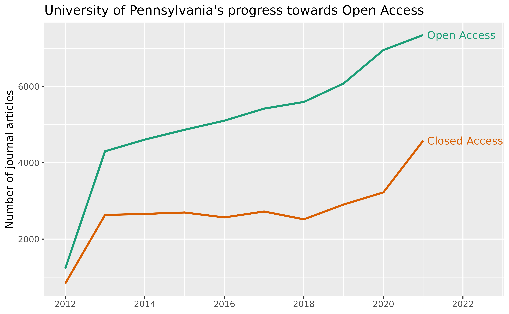

Following the template in OpenAlex’s oa-percentage tutorial, this vignette uses openalexR to answer:
How many of recent journal articles from the University of Pennsylvania are open access? And how many aren’t?
We first need to find the openalex.id
for University of Pennsylvania. We can do this by fetching for the
institutions entity and put “University of
Pennsylvania” in display_name or
display_name.search:
oa_fetch(
entity = "inst", # same as "institutions"
display_name.search = "\"University of Pennsylvania\""
) %>%
select(display_name, ror) %>%
knitr::kable()| display_name | ror |
|---|---|
| University of Pennsylvania | https://ror.org/00b30xv10 |
| Hospital of the University of Pennsylvania | https://ror.org/02917wp91 |
| University of Pennsylvania Health System | https://ror.org/04h81rw26 |
| Indiana University of Pennsylvania | https://ror.org/0511cmw96 |
| California University of Pennsylvania | https://ror.org/01spssf70 |
| Raymond and Ruth Perelman School of Medicine at the University of Pennsylvania | NA |
| Cheyney University of Pennsylvania | https://ror.org/02nckwn80 |
We will use the first ror, 00b30xv10, as one of the filters for our query.
Alternatively, we could go to the autocomplete endpoint at https://explore.openalex.org/ to search for “University of Pennsylvania” and find the ror there!
All other filters are straightforward and explained in detailed in
the original jupyter notebook tutorial.
The only difference here is that, instead of grouping by
is_oa, we’re interested in the “trend” over the years, so
we’re going to group by publication_year, and perform the
query twice, one for is_oa = "true" and one for
is_oa = "false" .
open_access <- oa_fetch(
entity = "works",
institutions.ror = "00b30xv10",
type = "journal-article",
from_publication_date = "2012-08-24",
is_paratext = "false",
is_oa = "true",
group_by = "publication_year",
count_only = TRUE
)
closed_access <- oa_fetch(
entity = "works",
institutions.ror = "00b30xv10",
type = "journal-article",
from_publication_date = "2012-08-24",
is_paratext = "false",
is_oa = "false",
group_by = "publication_year",
count_only = TRUE
)
uf_df <- closed_access %>%
select(- key_display_name) %>%
full_join(open_access, by = "key", suffix = c("_ca", "_oa"))
uf_df
#> key count_ca key_display_name count_oa
#> 1 2022 4327 2022 3879
#> 2 2021 3978 2021 7952
#> 3 2020 3188 2020 6987
#> 4 2019 2754 2019 5959
#> 5 2017 2724 2017 5414
#> 6 2015 2719 2015 4776
#> 7 2014 2690 2014 4557
#> 8 2016 2617 2016 5008
#> 9 2013 2594 2013 4318
#> 10 2018 2530 2018 5558
#> 11 2012 815 2012 1231
#> 12 2023 25 2023 11Finally, we compare the number of open vs. closed access articles over the years:
uf_df %>%
filter(key <= 2021) %>% # we do not yet have complete data for 2022 and after
pivot_longer(cols = starts_with("count")) %>%
mutate(
year = as.integer(key),
is_oa = recode(
name,
"count_ca" = "Closed Access",
"count_oa" = "Open Access"
),
label = if_else(key < 2021, NA_character_, is_oa)
) %>%
select(year, value, is_oa, label) %>%
ggplot(aes(x = year, y = value, group = is_oa, color = is_oa)) +
geom_line(size = 1) +
labs(
title = "University of Pennsylvania's progress towards Open Access",
x = NULL, y = "Number of journal articles") +
scale_color_brewer(palette = "Dark2", direction = -1) +
scale_x_continuous(breaks = seq(2010, 2024, 2)) +
geom_text(aes(label = label), nudge_x = 0.1, hjust = 0) +
coord_cartesian(xlim = c(NA, 2022.5)) +
guides(color = "none")